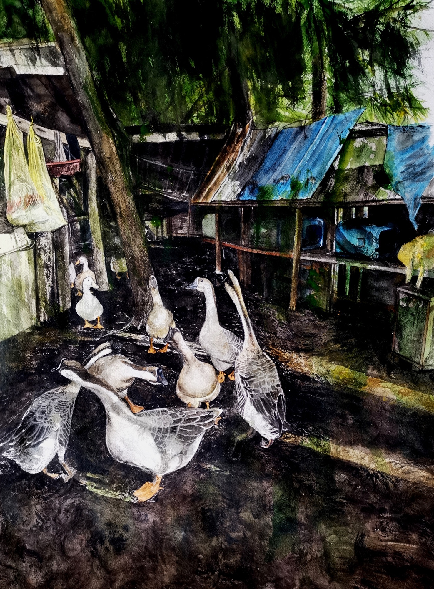

Warm Sun
暖阳

- Artwork ID / 作品编号
- KW-W-000026
- Year / 年份
- 2023
- Medium / 媒介
- Watercolor on paper / 纸本水彩
- Dimensions / 尺寸
- 76 × 53 cm (H × W / 高 × 宽)
Completed in 2024, Warm Sun portrays a quiet rural scene where geese, cottages, trees, and sunlight form a space filled with vitality. Dappled light and weathered buildings transform an ordinary landscape into one of warmth and calm.The painting reflects the enduring strength found in everyday life. The rhythm of the geese, the traces of time on the houses, and the movement of light together suggest resilience, coexistence, and quiet growth.The work continues my exploration of “Soft Feminine Power”—a strength expressed through care, inclusion, and the ability to nurture life. Rather than dramatic gestures, it celebrates the quiet warmth that allows life to flourish.
《暖阳》完成于2024年。作品以乡村日常为切入点，将鹅群、屋舍、树木与光影组织成一个充满生命气息的空间。斑驳树影下，鹅群自在游走，老旧屋舍静静伫立，光线洒落其间，使寻常景象获得了温暖而安定的精神气质。画面关注的是平凡生活中持续存在的生命力量。鹅群的秩序与自由、屋舍留下的岁月痕迹，以及光影在空间中的流动，共同构成一种温和而坚定的关系。温暖并非来自宏大的叙事，而来自日常经验中的包容、陪伴与生长。这件作品延续了我对于“柔性她力量”的思考。温柔并非软弱，而是一种能够承载、修复并持续生长的力量。作品希望在宁静的乡村景象中，让观者感受到生命与自然、人与环境之间彼此滋养、共同存在的关系。